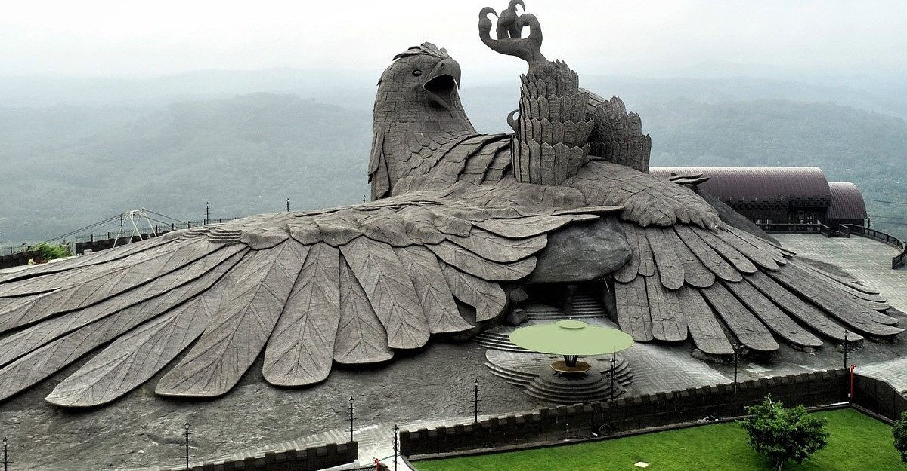

| Top 5 | Place | Description | Location |
|---|---|---|---|
| 1 |

Jatayu’s Earth Centre |
Spread across 65 acres of land, Jatayu Earth's Centre is a rock-themed park built to promote mythology and adventure. The world’s largest bird sculpture is the main attraction at Jatayupara Nature Park and is one among the several Kollam famous places. It has a 6D theatre, a digital audio-visual room, cable car and the Siddha Cave Healing Centre. The virtual reality museum here tells the story of Jatayu to visitors. It is also home to umpteen adventure activities including paintball, laser tag, archery, bouldering, rock climbing, air-rifle shooting, zip lining, trekking, rappelling, valley crossing, etc. |
|
| 2 |

Thangassery Lighthouse |
The Thangassery Lighthouse, also known as the Tangasseri Light House, boasts of being the second tallest on the entire coast of Kerala and is thus even one of the most visited lighthouses in the state on this account. The tower has a total height of 41 metres, or 135 feet, and has been operational since the year 1902.The majestic tower is clearly visible and distinct, with its painted red and white oblique bands, and looks pretty indeed in all its glory and majesty. |
|